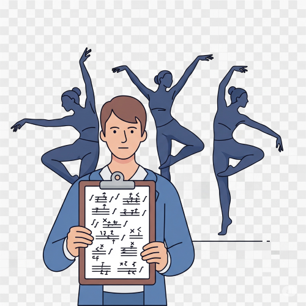

CHOROGRAPHY
Meaning of Choreography
Choreography is the art of creating and arranging movements for dance performances. It is the process where a choreographer plans and organizes dance steps, patterns, and actions to match music, emotion, or storytelling.

In simple terms, choreography means dance composition — the way dance is put together to pass a message, tell a story, or entertain an audience.
Who is a Choreographer?
A choreographer is someone who creates and teaches dance routines. The person arranges the movements and ensures that the dancers perform them correctly. A choreographer must be creative, patient, and skilled in different dance styles.
Concept of Dance Idea
Before starting any dance, the choreographer must have an idea or message to express through the dance. This idea can be:
- A story (e.g. “The King's Visit”).
- A message (e.g. “Say No to Cultism”).
- A celebration (e.g. wedding, new yam festival).
- An emotion (e.g. joy, sadness, excitement).
- A current issue (e.g. drug abuse, peace in Nigeria).
This idea is what guides the dance steps and movements that will be created.
Gathering of Movement
After getting the idea, the next step is to gather different dance movements that match the idea. The choreographer can:
- Use steps from traditional dances.
- Create new steps.
- Watch people, animals or nature for inspiration.
- Allow music to influence the movements.
Arranging and Teaching the Movement
- Choosing the beginning, middle, and end of the dance.
- Timing the movements with music.
- Grouping the dancers and arranging their positions.
- Teaching the steps to the dancers.
- Rehearsing regularly before performance.
- Selecting costumes and stage design.
Elements of Choreography
- Body – How the body moves
- Space – The area used for movement.
- Time – The rhythm or beat of the dance.
- Energy – The force or strength of the movement.
- Action – Steps like jumping, turning, etc.
- Relationship – How dancers move with each other
- Structure – The plan of the whole dance
Types of Choreography
- Narrative Dance – Tells a story.
- Thematic Dance – Based on an idea or topic.
- Abstract Dance – Just movements without story.
- Traditional Dance – Cultural or local dances.
- Modern/Contemporary Dance – Mix of new styles.
- Improvised Dance – Freestyle, not planned ahead.
Uses of Choreography in Nigeria
- Choreography is used in Cultural festivals.
- Choreography is used in Weddings and birthdays.
- Choreography is used in School events.
- Choreography is used in Church or mosque programmes.
- Choreography is used in Television shows and music videos.
- Choreography is used in Campaigns (e.g. against HIV/AIDS or drug abuse).
- Choreography is used in Nollywood films and live shows
Benefits of Choreography to Students
- It helps students express themselves.
- It improves body movement and posture.
- It builds confidence and discipline.
- It teaches teamwork and creativity.
- It helps preserve our cultural heritage.
Prospects of Dance in Nigeria
Dance is no longer just for fun. In Nigeria today, many people make money and build careers through dance.
- Professional Choreographer – Works with musicians and actors
- Dance Teacher – In schools or dance academies.
- Dance Performer – On stage or TV.
- Dance Therapist – Uses dance to help people with emotional problems.
- Social Media Dancer – Earns money through TikTok, YouTube, etc.
- Fitness Coach – Uses dance for body exercise.
- Cultural Dancer – Represents Nigeria in other countries.
- Stage Manager – Arranges dance shows and events.
ASSIGMENT AND REVISION
- Explain the meaning of choreography and state two reasons why it is important in dance.
- List and explain any three stages involved in preparing a choreographed dance performance.
- Mention four sources where a choreographer can get dance ideas.
- What is the work of a choreographer in a dance group?
- State and explain three career opportunities available in the field of dance in Nigeria.